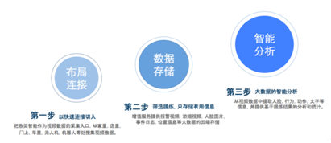

大到国家企业，小到个人用户，实时视频传输已经渗透进我们生活的方方面面，最常见的如微信QQ与家人朋友进行实时视频对讲。顺应时代的潮流，很多与互联网相挂钩的公司都竞相发展自己的实时视频传输服务，然而对于一家初涉实时视频传输服务的设备厂商来说，想完全自行搭建起一套实时视频传输软件系统，可能会面临诸多问题：如研发成本庞大、搭建周期冗长、服务运营繁重、性能优化艰难等，甚至可能分散其他业务过多的精力。
“众云视频”一站式服务平台正着力于解决设备厂商的这些难题。针对目标客户的这些业务痛点，“众云视频”集中全公司力量经过四年多的探索和技术积累，搭建起来的一站式服务平台可以让设备厂商快速方便地接入，为他们提供稳定、成熟和完备的解决方案，支持他们的产品为亿万移动互联网用户提供实时视频连接与服务。
“众云视频”是一站式的视频连接服务平台，不同于单纯的硬件或软件公司，“众云视频”专注为物联网领域的各类智能设备提供实时视频运营的PaaS服务（Platform-as-a-Service），提供从音视频采集、编码、传输、解码、展示、控制、存储、分析等整体平台一站式解决方案。正如Google为智能手机提供Android手机操作系统，“众云视频”为各种智能硬件设备提供实时音视频采集、传输、存储和分析的整套软件系统。
“掌上看家”是“众云视频”的第一次合作也是一个比较成功的尝试。掌上看家视频监控软件经过四年多的积累，全球激活设备已逾千万，分布范围覆盖全球70多个国家，其中超过50%的用户在国外，在苹果和各大android商店评价也是最好（接近5颗星），可以说已经取得了初步成功。
据了解，众云视频团队目前已有50多人并随着业务的发展在不断壮大，其中技术研发人员占三分之二，以硕士，学士研发工程师为主。“众云视频”创始人许占系清华大学计算机系本科及硕士，加拿大里贾纳大学计算机系博士，主攻计算机图像处理及理解，视频压缩及网络传输。
创始人许占拥有资深的技术能力和丰富的创业经验。2003年他曾领导创业公司 Reality Commerce Corp在加拿大上市，并获加拿大十大华裔高科技杰出人才奖和加拿大国会颁发的科技杰出人才奖。2005年在Teradici Corporation研发的远程桌面芯片的视频编解码算法被国际知名企业VMware和Amazon采用并用它作为其唯一远程连接协议。 2013年参与投资了南京熙健“掌上心电”项目并任董事长，获创新工场A轮2000万融资以及先声药业B轮投资。
“众云视频”是由南京云恩通讯科技有限公司自主研发的一个极具备开放性、 兼容性、交互性于一体的智慧视频云服务平台，南京云恩通讯自2012年成立以来不断探索发展，到现在已经发展成业务多元化的公司，根据公司业务发展定位众云视频的历程大致可以分为三个阶段：
第一个阶段：视频连接。以视频连接服务作为切入点，从家里、店里、门上、车里的手机、电脑、无人机、机器人等设备的摄像机头上搜集视频数据。
第二个阶段：数据存储。对采集的数据，包括视频和其它结构化数据，筛选整理后存储在云端，作为下一步大数据分析的数据来源，同时将云存储作为增值服务提供给VIP用户。
第三个阶段：数据分析。从视频数据中提取人脸，行为，动作，文字等信息，并提供基于提练结果的分析和统计。
目前，众云视频基本完成了前两个阶段的探索，第三阶段的工作也已经展开。此外，云视频的每一步都是“付费服务”，第一阶段的连接服务，设备商支付连接的License费用；第二阶段的数据云存储服务，是以增值服务的形式由用户付费购买；第三阶段的大数据统计结果，结合视频数据一起卖给大的平台机构。
最终，“众云视频”把视频连接和服务器平台作为一种服务进行提供，通过和数以千计的智能设备厂商的对接来发展用户，对最终用户提供云端存储和视频智能分析等增值服务来实现盈收。“众云视频”本着对研发的执着，对行业的理解，团队一直坚持走出一条创新之路，将众云视频打造成物联网领域领先的视频运营服务商。
原创文章转载请注明：www.zvcloud.com